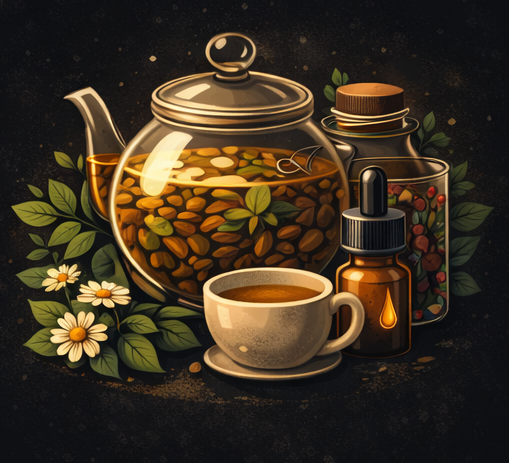
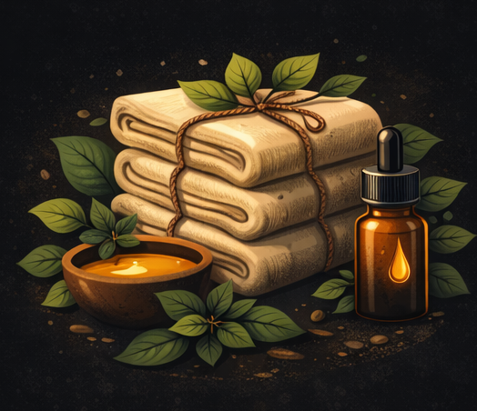
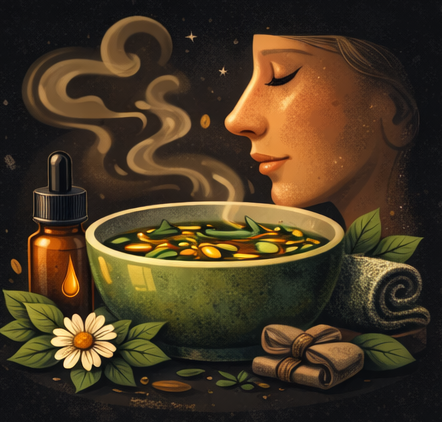
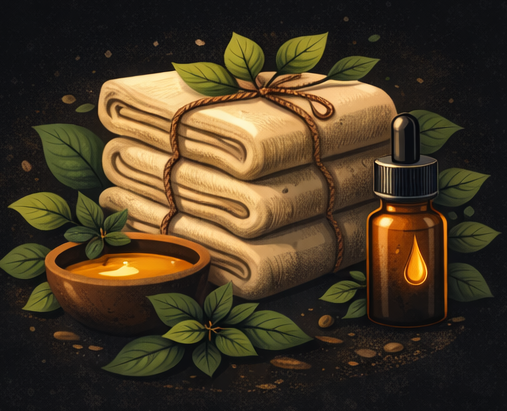
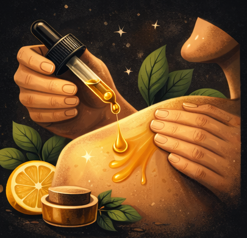
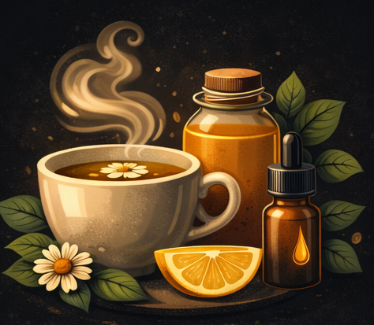

Populaire
Infusion
Infusion de Thym
Gorge irritée • Voies respiratoires
Découvrez +500 remèdes naturels validés par des générations. Recherchez par symptôme, sauvegardez vos favoris et accédez à tout, même hors-ligne.
Essayez la recherche ci-dessous, puis téléchargez l'app pour l'expérience complète :
Explorez notre base de remèdes traditionnels. Recherchez par mot-clé, filtrez par symptôme, zone du corps ou type de préparation.
Découvrez les différentes approches utilisées depuis des générations pour prendre soin de soi naturellement.

Extraits de plantes par immersion dans l'eau chaude
→
Applications externes de préparations naturelles
→
Inhalations et fumigations bienfaisantes
→
Linges imbibés pour soulager localement
→
Massages avec huiles et préparations
→Préparations sucrées aux vertus apaisantes
→Les recettes les plus consultées par notre communauté, transmises de génération en génération.
Gorge irritée • Voies respiratoires
Douleurs articulaires • Inflammations
Respiration • Décongestion

Sommeil • Relaxation
Toux • Immunité
Digestion • Énergie
Chaque fonctionnalité a été conçue pour vous offrir une expérience intuitive, personnalisée et enrichissante.
Trouvez instantanément le remède adapté grâce à notre moteur de recherche avancé.
Affinez vos recherches par symptôme, zone du corps ou type de préparation.
Un questionnaire initial pour comprendre vos besoins et adapter l'expérience.
Des suggestions personnalisées basées sur votre profil et vos préférences.
Suivez votre état quotidien et recevez des conseils adaptés à votre humeur.
Sauvegardez vos remèdes préférés pour y accéder rapidement.
Des rappels bienveillants pour maintenir vos routines bien-être.
Chaque remède avec ses ingrédients, étapes et conseils d'utilisation.
Découvrez les produits naturels utiles pour préparer vos remèdes.
Dès votre première utilisation, un questionnaire simple permet à l'application de comprendre vos besoins, vos préférences et vos éventuelles sensibilités.
L'onglet bien-être vous accompagne jour après jour pour mieux comprendre votre corps et adopter des routines naturelles.
Notez vos ressentis et suivez votre évolution au fil des jours.
Évaluez votre niveau de stress et recevez des conseils apaisants.
Analysez vos nuits et découvrez des remèdes pour mieux dormir.
Suivez votre moral et identifiez les facteurs d'influence.
Identifiez les patterns et anticipez vos besoins.
Des recommandations personnalisées basées sur vos données.
Chaque fiche remède vous indique les ingrédients nécessaires. Nous vous recommandons des produits de qualité pour préparer vos préparations en toute confiance.
Savoirs de Grand-Mère est né d'une conviction simple : les remèdes traditionnels méritent d'être préservés et rendus accessibles à tous, dans une interface moderne et intuitive.
Nous croyons en la valeur des savoirs transmis de génération en génération. Ces connaissances, fruit de siècles d'observation et d'expérience, constituent un patrimoine précieux qu'il nous tient à cœur de partager.
Notre approche est informative et préventive. Nous ne prétendons pas remplacer la médecine conventionnelle, mais offrir un complément naturel pour ceux qui souhaitent explorer les bienfaits des plantes et des méthodes traditionnelles.
Les informations présentées dans cette application sont issues de savoirs traditionnels et populaires. Elles sont fournies à titre informatif et ne remplacent en aucun cas un avis médical professionnel. En cas de doute ou de symptômes persistants, consultez toujours un professionnel de santé.
Rejoignez notre communauté et explorez des centaines de remèdes naturels transmis de génération en génération.